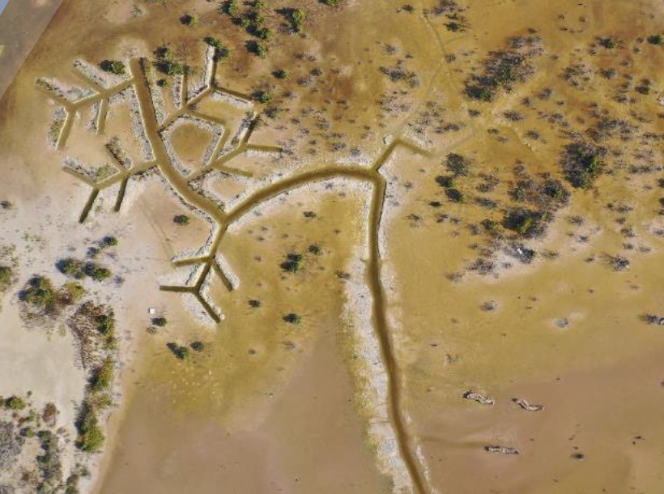

Code
# Add the tables in a nice formatDecember 19, 2022
Data is a new language in which we read, write, and transform the figures our eyes cannot naturally see, hidden in our surrounding reality. However, thanks to the technological revolution, those “natural numbers” can now be deciphered and manipulated by people who are fortunate and deft enough to speak and understand such language.
Rephrasing a definition of data coined by Stefania Milan “Data is seen as an avenue to revert or challenge our dominant understandings of the world, (re)creating conditions of possibility for counter-imaginaries and social justice claims to emerge.” With that in mind, In this blog post, I will discuss how data experts would be able to generate more consciousness on ethics and bias while developing a more sensitive touch in their daily work as environmental data scientists. To help express these thoughts on paper, I will use an actual environmental project held in the Yucatán Peninsula of Mexico and discuss how responsible and equitable data scientists should behave when exercising the power of data to design a world case example out of this project.
My musings expressed in this post are meant to awaken present and future “data evangelists”, motivating them to nourish a better sense of community within their field, and understanding the substantial change that both environment and society will experience through Project Chaac. This reflection will be based on the skills and foundations I have acquired throughout the course of Ethics and Bias in Environmental Data Science at the Bren School of Environmental Science & Management.
At its core, Project Chaac seeks to protect, conserve, and restore a territory of 42,676 hectares of degraded mangroves in the southern Mexican state of Yucatán. The project involves a significant amount of team management that must be aligned with overall environmental impact. Worldwide, most of the lands and territories targeted for greenhouse gas (GHG) mitigation action overlap with areas customarily held by indigenous groups, local communities, and Afro-descendant peoples.
Moreover, most of the lands and forests targeted for nature-based greenhouse gas removal and offset, like Project Chaac, are located within areas where the State’s customary rights of communities have yet to be recognized (Reference two). Therefore, I will briefly describe some difficulties and potential roadblocks involving ethics and bias that the project might face in Mexico, since its complexity resides in the entangled path of multiple factors and circumstances at constant play. Metaphorically speaking, this project is a living, growing vine, in which the roots are essential; biodiversity stands for the open minds involved; key nutrients represent human values, and the environment as a whole is the high frequency vibe of all the passionate individuals that will provide a firm and rich soil to plant the seed of change. Finally, we will analyze how this tiny seed can become a fully grown, jade-green turquoise plant, as astonishing as the Strongylodon Macrobotrys.
As with all plants, a careful assessment of the seed germination and the creation of concise strategies will have an exponential impact on the growth and direction of the project. Here are the three axes on which I foresee true potential for building solid bridges between ethics and bias resides:
Data Justice.- Satellite images are used to select the pieces of land with the highest potential for mangrove restoration in the area. Therefore an equitable allocation of carbon credits rights, land use, and business strategy must be well cemented among all players involved: Federal and local authorities, as well as the private sector, along with the rural communities called ejidos, as well as the territories inhabited by Afro-descendants. (Reference four)
Project Development.- The actual value of the land comes when you dip your hands in the dirt while sweating big fat droplets on the rich soil, learning and adapting to your surroundings. In this case, the project implies complicated engineering analysis to build an efficient network of hydrological channels in the near future, in order to embrace a healthy and protected ecosystem in the restored mangrove lands.

Now, I would like to define what Blue Carbon is and why it is so important. A newly developed concept, it refers to the carbon stocks sequestered in any coastal ecosystem, like mangroves, sea grasses, and salt marshes. Mangroves are considered one of the most productive and biologically complex ecosystems on earth; that is why they are also regarded as Nature’s “superheroes” fighting against climate change.
However, over the last few years, mangroves have been deforested at an alarming rate, due to increased coastal development and other anthropogenic factors. Thus, conservation and restoration of these coastal ecosystems are essential both to sustain the natural environment and to assure their decisive impact on our world. As with coral reefs, mangrove forests allow the development of true environmental health by fostering fisheries and healthy coastal ecosystems, as well as by providing significant protection from natural disasters.
Next, I will introduce the topic of Data Justice and why it is relevant to this project and blog post. Data Justice happens whenever data relies on insufficient recognition to understand real community needs. It is an approach that addresses new ways of data collection and dissemination of crucial facts which have been invisibilized in the past, thus harming marginalized communities (Reference six). Therefore, it plays an essential role in carbon-credit adjudications. In environmental science, carbon stocks represent the total amount of organic carbon stored within an environmental system, so the correct manipulation of data is key to quantifying such processes. Hence, data scientists play a vital role in elegant calculations in the pursuit of data justice.
Regarding carbon rights in Mexico, I am presenting two tables to describe some general carbon trade legal agreements. Carbon rights are used to describe a number of different tradeable GHG prerogatives. In other words, it is the given right to benefit from sequestered carbon and/or reduced greenhouse gas emissions.” (Reference two)
| Country | Laws for securing community tenure to forests? | Established a national legal framework for carbon trade? | Defined carbon rights? | Are carbon rights linked to tenure? | Do communities have carbon rights? |
|---|---|---|---|---|---|
| Mexico | Yes | Partial | Inconclusive or undefined | Inconclusive or undefined | Inconclusive or undefined |
| Country | Country area where rights of Indigenous peoples, local communities, and Afro-descendants are legally recognized | Country area where rights of Indigenous peoples, local communities, and Afro-descendants are not legally recognized | Total percent of land held by Indigenous peoples, local communities, and Afro-descendants |
|---|---|---|---|
| Mexico | 52 % | 0.50% | 52.5 % |
As the tables clearly depict, Mexico has an inconclusive law on carbon rights. However, almost half of its territory is legally recognized when referring to its indigenous peoples, local communities, and Afro-descendants, which is today a leading example among developing countries.
So now we have an overview of the project’s objectives. However, how and where does data manipulation impact its success?
Currently, the CINVESTAV (The Center for Research and Advanced Studies of the National Polytechnic Institute), a non-governmental Mexican research institution, has settled and defined the actual conditions of the mangroves by using satellite imagery. After collecting images from the Sentinel-2A 7 from March 2021 to June 2022, and by using a powerful environmental data science tool called NDVI (Normalized Difference Vegetation Index), they were able to quantify and define the areas with higher and lower vegetation density health. In other words, they designated the patches of land in specific areas of interest, where vegetation reflects green back to space (meaning healthy mangroves), comparing such areas against those showing degraded or deforested vegetation, (which reflected longer color wavelengths).
By using the NDVI tool, a language that only a few people know about (remember “potential bias”?), the CINVESTAV team defined those sections of land with a higher probability of mangrove reforestation along with the potential for the development of a potential carbon accounting business. As you can imagine, such results designate an important plant tutor, which sets the standard for launching critical collaborative agreements with land owners, state governments, private companies, and ejidos.
Nowadays, technology has become a potent influential tool across the globe, but it can also be scary and threatening to those who do not understand it. Consequently, I invite all involved parties, especially data scientists, to think outside the box from the very beginning and bring the terminology of Data Justice into play.
In contrast, if a project lacks a strategy of environmental data justice or fails to recognize an equitable carbon right among indigenous people and/or local communities, it will surely generate a negative domino effect with huge implications, leaving long-lasting scars for all future environmental nature-based initiatives.
Throughout the course of Ethics and Bias, I learned the importance of becoming data-sensitive. I am one of those scientists who are fortunate enough to speak the language of data, having developed a sense for reading and hearing his surroundings in order to find a deeper connection with their heart and soul, ensuring that the local wisdom moves from one generation to the next, honoring its ancient knowledge as an invaluable heritage. I wish to become a key player in communicating the importance of this work, quickly generating new allies within the communities. Undoubtedly, data sensitivity is the vital foundation for building a solid ethical environment.
Unfortunately, only some countries explicitly recognize community carbon rights, and even fewer have tested established rules’ operational and political feasibility. However, Project Chaac has all the tools to become a world case example of a well-organized project, although a topnotch level of data sensitivity, knowledge on carbon rights, data justice, and firm management must be assured to bring all the pieces together.
Overall, the success of this mangrove restoration project depends heavily on a vigorous commitment between all players involved: Collaborators, government agents, lawyers, field engineers, data scientists, and ejido leaders, among others. These 40,000 hectares of land are heavily threatened by tourism and pressure from the governmental instances. Yet, I am certain that Project Chaac represents a golden opportunity to show the world how a nature-based solution with a well-cemented ethical culture is definitely possible. All of the aforementioned factors will empower our incipient vine to evolve into an emerald wonder that will make the world’s eyes widen in awe, aiming to the skies.
References:
1. Stefania, S. (2019) Full article: Exploring Data Justice: Conceptions, applications and ..., Exploring Data Justice: Available at: https://www.tandfonline.com/doi/full/10.1080/1369118X.2019.1606268 (Accessed: December 8, 2022).
2. Initiative, A.R.and R. (2020) Rights-based conservation: The path to preserving Earth’s biological and cultural diversity?, Rights + Resources. Available at: https://rightsandresources.org/publication/rights-based-conservation/ (Accessed: December 7, 2022).
3. Strongylodon macrobotrys (2022) Wikipedia. Wikimedia Foundation. Available at: https://en.wikipedia.org/wiki/Strongylodon_macrobotrys (Accessed: December 7, 2022).
4. Ejido (2022) Wikipedia. Wikimedia Foundation. Available at: https://en.wikipedia.org/wiki/Ejido (Accessed: December 7, 2022).
5. Hood, C. (2020) Completing the Paris ‘rulebook’: Key article 6 issues, Center for Climate and Energy Solutions. Available at: https://www.c2es.org/document/completing-the-paris-rulebook-key-article-6-issues/ (Accessed: December 7, 2022).
6. Taylor, L. (2017). What is Data Justice? The case for connecting digital rights and freedoms globally. Big Data & Society.https://doi.org/10.1177/2053951717736335.
7. Home (no date) Sentinel. Available at: https://sentinels.copernicus.eu/web/sentinel/user-guides/sentinel-2-msi/product-types/level-2a (Accessed: December 7, 2022).
@online{patrón2022,
author = {Patrón, Javier},
title = {Project {Chaac} {Dives} into the {Pool} of {Ethical} {Sense}},
date = {2022-12-19},
url = {https://github.com/javipatron},
langid = {en}
}